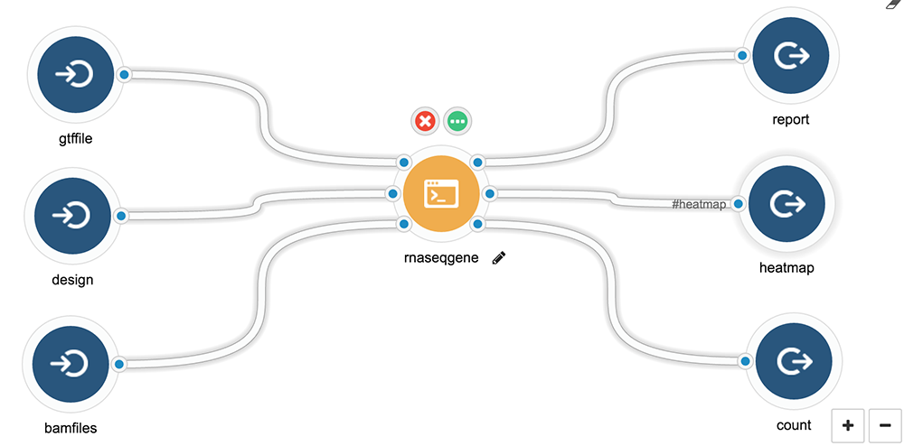

Master Tutorial: Use R for Cancer Genomics Cloud
Tengfei Yin <tengfei.yin@sevenbridges.com>
2018-11-14
Source:vignettes/bioc-workflow.Rmd
bioc-workflow.RmdIntroduction
This tutorials originates from 2016 Cancer Genomics Cloud Hackathon R workshop I prepared, and it’s recommended for beginner to read and run through all examples here yourself in your R IDE like Rstudio. Then try to make your own app.
In this tutorial, you will learn:
- API client in R with sevenbridges R package to fully automate analysis
- Describe command line interface with R package docopt
- Make your own Docker app
- Describe a standard RNA-seq Bioconductor workflow in CWL with pre-defined report template
- Execute it in the cloud
- Reporting tool to generate as many R markdown report or Shiny apps report as you want
- Deploy directly on shiny server like shinyapps.io from a “report” tool
Prerequisites
This tutorial doesn’t require you to be an advanced R user, everything you need is R or even better, a cool IDE like Rstudio (or Emacs+ESS), then just open this R Markdown document in Rstudio. It’s easy to learn!
Suggest learning for all users: Docker.
Now we are ready to go!
Installation
First download the R Markdown source of this page, so you can load it to your RStudio or your favorite IDE to run through all examples and tweak setup.
This package sevenbridges is available on Bioconductor (release branch, development branch). The latest development version is on GitHub.
To install the latest development version from GitHub, run the following commands in R:
if (!require("devtools", quietly = TRUE)) install.packages("devtools")
install.packages("BiocManager")
install.packages("readr")
devtools::install_github(
"sbg/sevenbridges-r",
repos = BiocManager::repositories(),
build_vignettes = TRUE, dependencies = TRUE
)After the installation you can always browse the vignettes
Register on Cancer Genomics Cloud

You can find login/registration on the Cancer Genomics Cloud homepage https://www.cancergenomicscloud.org. Follow the signup tutorial if you need to access TCGA Controlled Data on the CGC via NIH eRA Commons.
Authentication
After logged in, you can get your authentication token under your account setting and the “Developer” tab (tutorial).
Register on shinyapps.io (Optional)
In this tutorial, if you want to try to deploy the Shiny web application automatically on a remote server like shinyapps.io, please visit https://www.shinyapps.io/ to register and login.
Get you token and secret ready to deploy:

Report issues
This package is under active development, will bring many new features as well, at any moment, if you have questions or problem about this R package, please file issues on GitHub.
If you have question regarding the Cancer Genomics Cloud or other Seven Bridges platforms, we have a different channel for each platform, for example, Cancer Genomics Cloud have lots documentation and a forum.
Please, feedback is always welcomed!
Quickstart
The final goal is make a workflow that
- Input gene feature, design matrix, bam files, and generate differential expression report and output full report, a picture and a count table as example.
- Add report tool with two Shiny app template and two R Markdown template to collect files from previous flow and generate new report, even deploy on shinyapps.io automatically after a task is finished.
The final workflow looks like this, it’s composed of two tools: RNA-seq analysis tool and reporting tool.

The Shiny app report with ggvis module on the shinyapps.io server looks like this
A ggvis interactive scatter plot

A differential expression table

A full HTML report included, it’s also the output from the first tool, in this way, you can orchestrate many tools output into single report for your task.


Now let’s start building tools.
Create a project under your account via API R client
I know, we can always do it via graphic user interface, but let’s have fun with the sevenbridges packages you just installed.
For complete API tutorial and reference manual, please read another tutorial.
vignette("api", package = "sevenbridges")Now let’s do some simple steps, first thing to do is to create an Auth object, almost everything started from this object. Our API client follow a style like this Auth$properties$action. On the platform, Auth is your account, and it contains projects, billing groups, users, project contains tasks, apps, files etc, so it’s easy to imagine your API call.
To create an Auth object, simply pass the token and platform name (or alternatively, API base URL) to the Auth function. The default platform is set to CGC. Good news you can use the sevenbridges package to access any Seven Bridges platform with API (v2).
This is the main way to create an Auth object, just replace your_token with your own authentication token from the CGC:
Alternatively, you can save your authentication cross different platforms in a user configuration file named credentials under the directory $HOME/.sevenbridges/. This allows you to manage multiple user profiles registered on multiple Seven Bridges environments. An example user configuration file looks like this:
[aws-us-tengfei]
api_endpoint = https://api.sbgenomics.com/v2
auth_token = token_for_this_user
# This is a comment:
# another user on platform aws-us
[aws-us-yintengfei]
api_endpoint = https://api.sbgenomics.com/v2
auth_token = token_for_this_user
[cgc]
api_endpoint = https://cgc-api.sbgenomics.com/v2
auth_token = token_for_this_user
[gcp]
api_endpoint = https://gcp-api.sbgenomics.com/v2
auth_token = token_for_this_userWhen you have this user configuration file ready at this default location, all you need to do is setting from = "file" and choose the profile_name to use. For example:
a <- Auth(from = "file", profile_name = "cgc")
# # remove old project
# a$project(id = "tengfei/hackathon")$delete()The third way to save authentication information is by setting system environment variables. To set the two environment variables (SB_API_ENDPOINT and SB_AUTH_TOKEN) in your system, you could use the function sbg_set_env(). For example:
To create an Auth object using credentials in the environment variables:
To create a new project, you need to know your billing group id, cost related to this project will be charged from this billing group, now play with your free credit.
Now let’s create a new project called “hackathon”, save it to an object named p for convenient usage for any call related to this project.
(p <- a$project_new("hackathon",
billing_group_id = b$id,
description = "This project is for CGC hackathon"
))Now check it on CGC, you will see a fresh new project is created.

To delete it, just call, but I will suggest you keep it for following tutorial : )
Build a RNA-Seq tool: from bam to report
Step 1: Have a plan
To demonstrate I will use a RNA-seq workflow from Bioconductor, when you open this link, you will notice a full example written in Markdown I want to make it into an app and allow you to input new files and generate new report base on this template.
Before you build any tool, you have to have a plan in mind
- What Input, Output and Parameter you want to define for the tool
- Is there a Docker container already available for your tool? Do you want to build one with command line interface?
First thing first, let’s define our tool first, here is a diagram generated with Seven Bridges’ graphical user interface.

- Input
- Gene feature file
- A list of bamfiles
- Design matrix
- Output
- Report in PDF, using the R Markdown associated with this workflow and example
- Graphics
- Differential expression table
Step 2: Create Docker container for your tool
Building a development environment is essential for developing your command line interface and your app. There are some principles:
- First you need to check is there any existing container you can directly use, so you don’t have to make a new one. If you don’t know what to use, I will suggest you start with
rocker/hadleyverse, it has lots of stuff like Markdown, knitr need and other Hadley’s popular packages.
Official R Docker images is called “Rocker” project and is on GitHub, please visit the page to find more details and Dockerfile.
| Image | Description |
|---|---|
rocker/r-base |
base package to build from |
rocker/r-devel |
base + R-devel from SVN |
rocker/rstudio |
base + RStudio Server |
rocker/hadleyverse |
rstudio + Hadley’s packages, LaTeX |
rocker/ropensci |
hadleyverse + rOpenSci packages |
rocker/r-devel-san |
base, SVN’s R-devel and SAN |
Bioconductor have a nice page about the official Docker images, please read for more details.
| Image (release branch) | Image (development branch) |
|---|---|
bioconductor/release_base |
bioconductor/devel_base |
bioconductor/release_core |
bioconductor/devel_core |
bioconductor/release_flow |
bioconductor/devel_flow |
bioconductor/release_microarray |
bioconductor/devel_microarray |
bioconductor/release_proteomics |
bioconductor/devel_proteomics |
bioconductor/release_sequencing |
bioconductor/devel_sequencing |
bioconductor/release_metabolomics |
bioconductor/devel_metabolomics |
For example, you know there is an runif function in the rocker/r-base container, you can just do something like this. Please read another tutorial called “Describe and Execute CWL Tools/Workflows in R”, it introduced a simpler example with random number generator.
rbx <- Tool(
id = "runif",
label = "runif",
hints = requirements(docker(pull = "rocker/r-base"), cpu(1), mem(2000)),
baseCommand = "Rscript -e 'runif(100)'",
stdout = "output.txt",
outputs = output(id = "random", glob = "*.txt")
)
rbx$toJSON(pretty = TRUE){
"sbg:id": "runif",
"id": "#runif",
"inputs": [],
"outputs": [
{
"type": ["null", "File"],
"label": "",
"description": "",
"streamable": false,
"default": "",
"id": "#random",
"outputBinding": {
"glob": "*.txt"
}
}
],
"requirements": [],
"hints": [
{
"class": "DockerRequirement",
"dockerPull": "rocker/r-base"
},
{
"class": "sbg:CPURequirement",
"value": 1
},
{
"class": "sbg:MemRequirement",
"value": 2000
}
],
"label": "runif",
"class": "CommandLineTool",
"baseCommand": [
"Rscript -e 'runif(100)'"
],
"arguments": [],
"stdout": "output.txt"
} You can directly follow this tutorial, paste your JSON into your tool editor by click “import”. Then “save” and “run”, you will be able to run your first application on CGC with no parameters and input files.
- If you don’t want to make a new container with command line interface and you can simply insert script temporarily for existing container. You can do things as quick as this, by provide a script in the ‘content’ of ‘fileDef’.
# provide scripts
# make a new script file
fd <- fileDef(
name = "runif.R",
content = "set.seed(1); runif(100)"
)
rbx <- Tool(
id = "runif",
label = "runif",
hints = requirements(docker(pull = "rocker/r-base"), cpu(1), mem(2000)),
requirements = requirements(fd),
baseCommand = "Rscript runif.R", # run script you created.
stdout = "output.txt",
outputs = output(id = "random", glob = "*.txt")
)Note: in the above example, I made a mistake on purpose, so try to debug on the platform if the task fails : )
I will introduce “Tool” function, in the later section, don’t worry.
- For advanced developer/users: if you think a cool command line interface is worth doing, and convenient in any case, then go ahead and make one and create our own container will always be a better idea. this allow you to provide much formal interface at both command line level or container level.
Here is Dockerfile I used to generate the workflow I need
Here is the current content of the Dockerfile:
FROM rocker/tidyverse
MAINTAINER "Tengfei Yin" yintengfei@gmail.com
RUN Rscript -e 'source("http://bioconductor.org/workflows.R"); workflowInstall("rnaseqGene")'
ADD src/performDE.R /usr/local/bin/
RUN mkdir /report
ADD report/rnaseqGene.Rmd /report/
RUN chmod a+x /usr/local/bin/performDE.R \
&& chmod -R a+x /reportIt does a couple of things:
- Install workflow I need and all dependencies
- Insert command line interface I created, make it executable and in
PATH - Insert full report template I am using
In the next section, I will show you how to create command line interface.
Step 3: Create your command line interface
In this step, I am going to:
- Use R package
docoptto make R command line interface - Insert my script into the container I made
- Test function inside container
Here is the command line I am using it’s called “performDE.R”
Here is the current content of the Dockerfile:
#!/usr/bin/Rscript
"usage: performDE.R [options]
options:
--bamfiles=<file> bamfiles
--design=<file> design data frame
--gtffile=<file> gene feature file
--format=<string> pdf or html. [default: html]
" -> doc
library("docopt")
opts <- docopt(doc)
.design <- opts$design
if (is.null(.design)) {
.design <- system.file("extdata/sample_table.csv", package = "airway")
}
.bamfiles <- opts$bamfiles
if (is.null(.bamfiles)) {
.bamfiles <- list.files(system.file("extdata", package = "airway"), "*.bam",
full.names = TRUE
)
} else {
.bamfiles <- strsplit(opts$bamfiles, ",")[[1]]
}
.gtffile <- opts$gtffile
if (is.null(.gtffile)) {
.gtffile <- system.file("extdata/Homo_sapiens.GRCh37.75_subset.gtf",
package = "airway"
)
}
# create param list
lst <- list(
design = normalizePath(.design),
gtffile = normalizePath(.gtffile),
bamfiles = normalizePath(.bamfiles),
currentPath = normalizePath(".")
)
# render the report
.format <- switch(opts$format,
"pdf" = "pdf_document",
"html" = "html_document", {
"pdf_document"
}
)
rmarkdown::render("/report/rnaseqGene.Rmd", .format,
output_dir = ".",
params = lst
)
# For rabix execution in the cloud,
# this is now a workaround to move intermediate filesI am using docopt package instead of commandArgs because it allows you to create a formal interface. For example, you have '--help' from command line for free. Feel free to use other methods like commandArgs() in R.
$./performDE.R --help
Loading required package: methods
usage: performDE.R [options]
options:
--bamfiles=<file> bamfiles
--design=<file> design data frame
--gtffile=<file> gene feature file
--format=<string> pdf or html. [default: html]Sometime you want to produce a report, so in the end you will notice how I pass parameters from command line to a report.
Step 4: Add default report template to your app
As a developer, if you always have a fixed report template provided for you tool, you can hard-code your template into your Docker container, like you noticed in the Dockerfile I created, I insert a report R Markdown template. And in the command line interface, in the end, I pass it to rmarkdown::render function as parameters ‘param’. In this way, you define your input in the header of R Markdown. Examples like this, this template I used here, is exactly the same report on Bioconductor’s RNA-Seq workflow website.
Here is the current content (first 50 lines of the whole report) of the template:
---
title: "Uniform random number generator example"
date: "`r Sys.Date()`"
output:
pdf_document:
toc: true
toc_depth: 2
params:
bamfiles: ""
design: ""
gtffile: ""
currentPath: "."
---
# Acknowledgement
This RNA-seq test report is generated based on Biocondcutor workflow,
for experimental purpose, I tweaked the contents. Instead of a test
data, I am createing command line interface based on this document
that take new data and generate this report. It's experiments about
Docker, CWL, and Rabix.
<script type="text/javascript"
src="https://cdn.mathjax.org/mathjax/latest/MathJax.js?config=TeX-AMS-MML_HTMLorMML">
</script>
__original documentaion comes from__
# RNA-seq workflow: gene-level exploratory analysis and differential expression
Michael Love [1], Simon Anders [2,3], Vladislav Kim [3], Wolfgang Huber [3]
[1] Department of Biostatistics, Dana-Farber Cancer Institute and
Harvard School of Public Health, Boston, US;
[2] Institute for Molecular Medicine Finland (FIMM), Helsinki, Finland;
[3] European Molecular Biology Laboratory (EMBL), Heidelberg, Germany.
```{r style, echo=FALSE, message=FALSE, warning=FALSE, results="asis"}
library("knitr")
library("rmarkdown")
options(width = 100)
opts_knit$set(root.dir = params$currentPath)
opts_chunk$set(message = FALSE, error = FALSE,
warning = FALSE, fig.width = 5, fig.height = 5)
```
# ContentsSee the header, you will see ‘params’ which is passed from rmarkdown::render, so you can use it directly in the report like params$bamfiles.
Now you have
Dockerfile- Command line interface with report template
You are ready to build Docker container and push it to the registry. You can choose to use registry like dockerhub or use CGC’s own Docker registry (cgc-images.sbgenomics.com). To learn how to use CGC Image registry, please read out tutorial.
Step 5: Describe your tool in R into CWL
Finally it’s time to describe your tool in R (CWL format)!
Well, you are always encouraged to use graphical user interface, but it is at the same time fun to learn how to do it in R, so you could script how you build it together, like what I did here, for every single tool JSON, I have an R script called generator.R in the same folder, so I can always trace back.
For example, you can see the same in the sbg/sevenbridges-r GitHub repo, under inst/docker, you will see three examples, 1. package Docker 2. RNA-Seq tool 3. report tool, under each folder, you will see 1. one Dockerfile, 2. src/ for command line 3. report/ for report template and 4. rabix a generator file and a JSON.


Tool is the simple basic unit of a workflow, you can put the whole flow in one container and one tool, it of course works, just make it hard to factorize components. This is the exact example, I can make one tool for DESeq2 and one tool for Rsamtools, I can also put everything I need in one tool and provide single functionality.
Note: you can use single Docker image, but describe as many tools as you want if it contains what you need such as different command.
Follow the example to create Tool with Tool function. It’s straightforward. Especially if you are familiar with Seven Bridges Tool editor already.
Hints: please pay attention to how I create
- File list: via ItemArray(“File”) or “File…” this allow you to input multiple files form the task page.
- Single File: just “File”, only single file allowed.
- Expression to specify the javascript expression (note:it’s convenient to do it with graphic user interface, because you can directly see the result of the expression)
- Enum: call ‘enum’.
rbx <- Tool(
id = "rnaseqGene",
label = "rnaseqgene",
description = "A RNA-seq Differiencial Expression Flow and Report",
hints = requirements(docker(pull = "tengfei/rnaseqgene"), cpu(1), mem(2000)),
baseCommand = "performDE.R",
inputs = list(
input(
id = "bamfiles", label = "bam files",
description = "a list of bam files",
type = "File...", ## or type = ItemArray("File")
prefix = "--bamfiles",
itemSeparator = ","
),
input(
id = "design", label = "design matrix",
type = "File",
prefix = "--design"
),
input(
id = "gtffile", label = "gene feature files",
type = "File",
prefix = "--gtffile"
),
input(
id = "format", label = "report foramt html or pdf",
type = enum("format", c("pdf", "html")),
prefix = "--format"
)
),
outputs = list(
output(
id = "report", label = "report",
description = "A reproducible report created by Rmarkdown",
glob = Expression(
engine = "#cwl-js-engine",
script = "x = $job[['inputs']][['format']]; if(x == 'undefined' || x == null){x = 'html';};'rnaseqGene.' + x"
)
),
output(
id = "heatmap", label = "heatmap",
description = "A heatmap plot to show the Euclidean distance between samples",
glob = "heatmap.pdf"
),
output(
id = "count", label = "count",
description = "Reads counts matrix",
glob = "count.csv"
),
output(
id = "de", label = "Differential expression table",
description = "Differential expression table",
glob = "de.csv"
)
)
)By default it output YAML, but you can print it into JSON as well.
sbg:id: rnaseqGene
id: '#rnaseqGene'
inputs:
- type:
- 'null'
- items: File
type: array
label: bam files
description: a list of bam files
streamable: no
default: ''
id: '#bamfiles'
inputBinding:
position: 0
prefix: --bamfiles
separate: yes
itemSeparator: ','
shellQuote: no
sbg:cmdInclude: yes
streamable: no
separator: ' '
required: no
- type:
- 'null'
- File
label: design matrix
description: ''
streamable: no
default: ''
id: '#design'
inputBinding:
position: 0
prefix: --design
separate: yes
shellQuote: no
sbg:cmdInclude: yes
streamable: no
separator: ' '
required: no
- type:
- 'null'
- File
label: gene feature files
description: ''
streamable: no
default: ''
id: '#gtffile'
inputBinding:
position: 0
prefix: --gtffile
separate: yes
shellQuote: no
sbg:cmdInclude: yes
streamable: no
separator: ' '
required: no
- type:
- 'null'
- name: format
symbols:
- pdf
- html
type: enum
label: report foramt html or pdf
description: ''
streamable: no
default: ''
id: '#format'
inputBinding:
position: 0
prefix: --format
separate: yes
shellQuote: no
sbg:cmdInclude: yes
streamable: no
separator: ' '
required: no
outputs:
- type:
- 'null'
- File
label: report
description: A reproducible report created by Rmarkdown
streamable: no
default: ''
id: '#report'
outputBinding:
glob:
engine: '#cwl-js-engine'
script: x = $job[['inputs']][['format']]; if(x == 'undefined' || x == null){x
= 'html';};'rnaseqGene.' + x
class: Expression
- type:
- 'null'
- File
label: heatmap
description: A heatmap plot to show the Euclidean distance between samples
streamable: no
default: ''
id: '#heatmap'
outputBinding:
glob: heatmap.pdf
- type:
- 'null'
- File
label: count
description: Reads counts matrix
streamable: no
default: ''
id: '#count'
outputBinding:
glob: count.csv
- type:
- 'null'
- File
label: Differential expression table
description: Differential expression table
streamable: no
default: ''
id: '#de'
outputBinding:
glob: de.csv
requirements: []
hints:
- class: DockerRequirement
dockerPull: tengfei/rnaseqgene
- class: sbg:CPURequirement
value: 1
- class: sbg:MemRequirement
value: 2000
label: rnaseqgene
description: A RNA-seq Differiencial Expression Flow and Report
class: CommandLineTool
baseCommand:
- performDE.R
arguments: []{
"sbg:id": "rnaseqGene",
"id": "#rnaseqGene",
"inputs": [
{
"type": [
"null",
{
"items": "File",
"type": "array"
}
],
"label": "bam files",
"description": "a list of bam files",
"streamable": false,
"default": "",
"id": "#bamfiles",
"inputBinding": {
"position": 0,
"prefix": "--bamfiles",
"separate": true,
"itemSeparator": ",",
"shellQuote": false,
"sbg:cmdInclude": true,
"streamable": false,
"separator": " "
},
"required": false
},
{
"type": ["null", "File"],
"label": "design matrix",
"description": "",
"streamable": false,
"default": "",
"id": "#design",
"inputBinding": {
"position": 0,
"prefix": "--design",
"separate": true,
"shellQuote": false,
"sbg:cmdInclude": true,
"streamable": false,
"separator": " "
},
"required": false
},
{
"type": ["null", "File"],
"label": "gene feature files",
"description": "",
"streamable": false,
"default": "",
"id": "#gtffile",
"inputBinding": {
"position": 0,
"prefix": "--gtffile",
"separate": true,
"shellQuote": false,
"sbg:cmdInclude": true,
"streamable": false,
"separator": " "
},
"required": false
},
{
"type": [
"null",
{
"name": "format",
"symbols": ["pdf", "html"],
"type": "enum"
}
],
"label": "report foramt html or pdf",
"description": "",
"streamable": false,
"default": "",
"id": "#format",
"inputBinding": {
"position": 0,
"prefix": "--format",
"separate": true,
"shellQuote": false,
"sbg:cmdInclude": true,
"streamable": false,
"separator": " "
},
"required": false
}
],
"outputs": [
{
"type": ["null", "File"],
"label": "report",
"description": "A reproducible report created by Rmarkdown",
"streamable": false,
"default": "",
"id": "#report",
"outputBinding": {
"glob": {
"engine": "#cwl-js-engine",
"script": "x = $job[['inputs']][['format']]; if(x == 'undefined' || x == null){x = 'html';};'rnaseqGene.' + x",
"class": "Expression"
}
}
},
{
"type": ["null", "File"],
"label": "heatmap",
"description": "A heatmap plot to show the Euclidean distance between samples",
"streamable": false,
"default": "",
"id": "#heatmap",
"outputBinding": {
"glob": "heatmap.pdf"
}
},
{
"type": ["null", "File"],
"label": "count",
"description": "Reads counts matrix",
"streamable": false,
"default": "",
"id": "#count",
"outputBinding": {
"glob": "count.csv"
}
},
{
"type": ["null", "File"],
"label": "Differential expression table",
"description": "Differential expression table",
"streamable": false,
"default": "",
"id": "#de",
"outputBinding": {
"glob": "de.csv"
}
}
],
"requirements": [],
"hints": [
{
"class": "DockerRequirement",
"dockerPull": "tengfei/rnaseqgene"
},
{
"class": "sbg:CPURequirement",
"value": 1
},
{
"class": "sbg:MemRequirement",
"value": 2000
}
],
"label": "rnaseqgene",
"description": "A RNA-seq Differiencial Expression Flow and Report",
"class": "CommandLineTool",
"baseCommand": [
"performDE.R"
],
"arguments": []
} {"sbg:id":"rnaseqGene","id":"#rnaseqGene","inputs":[{"type":["null",{"items":"File","type":"array"}],"label":"bam files","description":"a list of bam files","streamable":false,"default":"","id":"#bamfiles","inputBinding":{"position":0,"prefix":"--bamfiles","separate":true,"itemSeparator":",","shellQuote":false,"sbg:cmdInclude":true,"streamable":false,"separator":" "},"required":false},{"type":["null","File"],"label":"design matrix","description":"","streamable":false,"default":"","id":"#design","inputBinding":{"position":0,"prefix":"--design","separate":true,"shellQuote":false,"sbg:cmdInclude":true,"streamable":false,"separator":" "},"required":false},{"type":["null","File"],"label":"gene feature files","description":"","streamable":false,"default":"","id":"#gtffile","inputBinding":{"position":0,"prefix":"--gtffile","separate":true,"shellQuote":false,"sbg:cmdInclude":true,"streamable":false,"separator":" "},"required":false},{"type":["null",{"name":"format","symbols":["pdf","html"],"type":"enum"}],"label":"report foramt html or pdf","description":"","streamable":false,"default":"","id":"#format","inputBinding":{"position":0,"prefix":"--format","separate":true,"shellQuote":false,"sbg:cmdInclude":true,"streamable":false,"separator":" "},"required":false}],"outputs":[{"type":["null","File"],"label":"report","description":"A reproducible report created by Rmarkdown","streamable":false,"default":"","id":"#report","outputBinding":{"glob":{"engine":"#cwl-js-engine","script":"x = $job[['inputs']][['format']]; if(x == 'undefined' || x == null){x = 'html';};'rnaseqGene.' + x","class":"Expression"}}},{"type":["null","File"],"label":"heatmap","description":"A heatmap plot to show the Euclidean distance between samples","streamable":false,"default":"","id":"#heatmap","outputBinding":{"glob":"heatmap.pdf"}},{"type":["null","File"],"label":"count","description":"Reads counts matrix","streamable":false,"default":"","id":"#count","outputBinding":{"glob":"count.csv"}},{"type":["null","File"],"label":"Differential expression table","description":"Differential expression table","streamable":false,"default":"","id":"#de","outputBinding":{"glob":"de.csv"}}],"requirements":[],"hints":[{"class":"DockerRequirement","dockerPull":"tengfei/rnaseqgene"},{"class":"sbg:CPURequirement","value":1},{"class":"sbg:MemRequirement","value":2000}],"label":"rnaseqgene","description":"A RNA-seq Differiencial Expression Flow and Report","class":"CommandLineTool","baseCommand":["performDE.R"],"arguments":[]} # # or write to an external file
# fl <- "~/Downloads/rnaseqGene.json"
# write(rbx$toJSON(pretty = TRUE), fl)Now you want to add app to your project p, by calling app_add method, the first argument is name, the second is either a CWL JSON file, Tool object, or Workflow object.
Please go check your app in your project, check input output and how it maps to the UI.
Step 6: Execute your tool with a new task via R API
Now let’s create a task and execute it with example files. You need to pass unique file id as input, so the first thing is to get file id you need for that project.
Now let’s import some files to your project for this tutorial, you can also do it via our API client by call upload function on project object. It supports
- Single file, multiple file, and folder (recursively all files) as first arugment
-
name: a new name (with single file upload) -
overwrite = TRUEto overwrite existing file -
metadata: a list of meta otherwise search for the same file name ended with “.meta”
For example:
fl <- system.file("extdata", "sample1.fastq", package = "sevenbridges")
(p <- a$project(id = "tengfei/quickstart"))
# by default load .meta for the file
p$upload(fl, overwrite = TRUE)
# pass metadata
p$upload(fl, overwrite = TRUE, metadata = list(library_id = "testid2", platform = "Illumina x11"))
# rename
p$upload(fl,
overwrite = TRUE, name = "sample_new_name.fastq",
metadata = list(library_id = "new_id")
)
# upload folder
dir.ext <- system.file("extdata", package = "sevenbridges")
p$upload(dir.ext, overwrite = TRUE)
# upload file list
fls <- list.files(dir.ext, recursive = TRUE, full.names = TRUE)
p$upload(fls, overwrite = TRUE)For now try using our graphic user interface to import all files listed here:
download.fl <- system.file("extdata/download.txt", package = "sevenbridges")
cat(readLines(download.fl), sep = "\n")Warning in readLines(download.fl): incomplete final line found on '/usr/
local/lib/R/3.5/site-library/sevenbridges/extdata/download.txt'https://raw.githubusercontent.com/tengfei/resource/master/2016/04-01-hackathon/data/example_report.Rmd
https://raw.githubusercontent.com/tengfei/resource/master/2016/04-01-hackathon/data/hello-markdown.Rmd
https://raw.githubusercontent.com/tengfei/resource/master/2016/04-01-hackathon/data/hello.tar
https://raw.githubusercontent.com/tengfei/resource/master/2016/04-01-hackathon/data/Homo_sapiens.GRCh37.75_subset.gtf
https://raw.githubusercontent.com/tengfei/resource/master/2016/04-01-hackathon/data/sample_table.csv
https://raw.githubusercontent.com/tengfei/resource/master/2016/04-01-hackathon/data/scatter_plot.tar
https://raw.githubusercontent.com/tengfei/resource/master/2016/04-01-hackathon/data/SRR1039508_subset.bam
https://raw.githubusercontent.com/tengfei/resource/master/2016/04-01-hackathon/data/SRR1039509_subset.bam
https://raw.githubusercontent.com/tengfei/resource/master/2016/04-01-hackathon/data/SRR1039512_subset.bam
https://raw.githubusercontent.com/tengfei/resource/master/2016/04-01-hackathon/data/SRR1039513_subset.bam
https://raw.githubusercontent.com/tengfei/resource/master/2016/04-01-hackathon/data/SRR1039516_subset.bam
https://raw.githubusercontent.com/tengfei/resource/master/2016/04-01-hackathon/data/SRR1039517_subset.bam
https://raw.githubusercontent.com/tengfei/resource/master/2016/04-01-hackathon/data/SRR1039520_subset.bam
https://raw.githubusercontent.com/tengfei/resource/master/2016/04-01-hackathon/data/SRR1039521_subset.bamTo use the API to uplaod, let’s download it to a folder and upload via API.
td <- tempfile()
dir.create(td)
for (f in readLines(download.fl)) {
download.file(f, file.path(td, basename(f)))
}
# double check
list.files(td)
# upload to the project you created
p$upload(td)Copy this list, and then in your project, click “add files”, and choose “import from ftp” (tutorial).
When it’s finished, refresh your file page, you will be able to see all of them. The cool thing is that you can search file by ‘name’ not by id, it support fuzzy pattern match.
# get file id you need as inout
(bamfiles.in <- p$file(".bam"))
(design.in <- p$file("sample_table.csv"))
(gtf.in <- p$file("Homo_sapiens.GRCh37.75_subset.gtf"))Note: you can also passed a list of files like this, to give exact file names
bam1 <- p$file("SRR1039516_subset.bam")
bam2 <- p$file("SRR1039512_subset.bam")
bamfiles.in2 <- list(bam1, bam2)Now create a new draft task in your project, don’t forget to pass input.
# add a new Task
(tsk <- p$task_add(
name = "RNA DE report new",
description = "RNA DE analysis report",
app = rna.app$id,
inputs = list(
bamfiles = bamfiles.in,
design = design.in,
gtffile = gtf.in
)
))
# don't forget to run a draft task
tsk$run()To monitor the task, run following command, it will tell you when it’s finished, but this is not running in the background now.
A better way is to use the Task hook function, it’s flexible, you can hook any function to a task status. For example, when it’s complete download the files. Now try to send your self a text message : )
To download all files from a completed tasks
To run task in batch mode, check ?batch for more details. Here is an mock running:
# batch by items
(tsk <- p$task_add(
name = "RNA DE report new batch 2",
description = "RNA DE analysis report",
app = rna.app$id,
batch = batch(input = "bamfiles"),
inputs = list(
bamfiles = bamfiles.in,
design = design.in,
gtffile = gtf.in
)
))
# batch by metadata, input files has to have metadata fields specified
(tsk <- p$task_add(
name = "RNA DE report new batch 3",
description = "RNA DE analysis report",
app = rna.app$id,
batch = batch(
input = "fastq",
c("metadata.sample_id", "metadata.library_id")
),
inputs = list(
bamfiles = bamfiles.in,
design = design.in,
gtffile = gtf.in
)
))For more details, check R API tutorial.
Build a reporting Tool
What is report tool?
In our last section, we demonstrate how to hardcode a R report template into your Docker container and your command line will output a new report with new input files.
But how about this, instead of coding template into Docker, I want to
- Provide multiple R markdown template as input
- Provide multiple shiny template as input
- Provide multiple liftr template as input
- Collect files from a flow used for my report
- Collect report from different tools of a single workflow and compile a summary report
Here I am developing a report tool to support all these in a single tool and it uses two different engines to provide isolated environment to generate report, because each report has different dependencies.
-
packratengine: isolated libraries - liftr engine (in progress): Docker in Docker

Requirement for your report template
This is how it works
- An app folder is created for each template
- In this root folder, you have
data,src,wwwfolders, on the interface, you can connect output into those folders, so data flows into it. - First copy what’s in your template, then copy those task output into those folders.
- Now create isolated environment by
packratorliftr. - Compile your template into report or new Shiny app
- If you pass shinyapp.io token, name, secret, will deploy shiny app for you!
- So in your template, you have to know file name and location relative to your app root, this is the most important requirement now.
If you are interested, you can still read my Dockerfile, command line, tool generator and JSON.
I will suggest you directly copy the json into your project. Just to try add an app in a different way.
fl <- system.file("docker/reporttool/rabix/reporttool.json",
package = "sevenbridges"
)
cat(readLines(fl), sep = "\n"){
"sbg:id": "reporttool",
"id": "#reporttool",
"inputs": [
{
"type": [
"null",
{
"items": "File",
"type": "array"
}
],
"label": "",
"description": "Shinay app template as zipped(.zip) or tar(tar.gz) file.",
"streamable": false,
"default": "",
"id": "#shinyTemplate",
"inputBinding": {
"position": 0,
"prefix": "--shinyTemplate",
"separate": true,
"itemSeparator": ",",
"sbg:cmdInclude": true
}
},
{
"type": [
"null",
{
"items": "File",
"type": "array"
}
],
"label": "",
"description": "Rmarkdown file template will be rendered by knitr",
"streamable": false,
"default": "",
"id": "#knitrTemplate",
"inputBinding": {
"position": 0,
"prefix": "--knitrTemplate",
"separate": true,
"itemSeparator": ",",
"sbg:cmdInclude": true
}
},
{
"type": [
"null",
{
"items": "File",
"type": "array"
}
],
"label": "",
"description": "Files to be included in data folder of app",
"streamable": false,
"default": "",
"id": "#data",
"inputBinding": {
"position": 0,
"prefix": "--data",
"separate": true,
"itemSeparator": ",",
"sbg:cmdInclude": true
}
},
{
"type": [
"null",
{
"items": "File",
"type": "array"
}
],
"label": "",
"description": "Files to be included in www folder of app",
"streamable": false,
"default": "",
"id": "#www",
"inputBinding": {
"position": 0,
"prefix": "--www",
"separate": true,
"itemSeparator": ",",
"sbg:cmdInclude": true
}
},
{
"type": [
"null",
{
"items": "File",
"type": "array"
}
],
"label": "",
"description": "Files to be included in src folder of app",
"streamable": false,
"default": "",
"id": "#src",
"inputBinding": {
"position": 0,
"prefix": "--src",
"separate": true,
"sbg:cmdInclude": true
}
},
{
"type": [
"null",
{
"items": "File",
"type": "array"
}
],
"label": "",
"description": "Files to be included in root of app folder",
"streamable": false,
"default": "",
"id": "#appFiles",
"inputBinding": {
"position": 0,
"prefix": "--appFiles",
"separate": true,
"itemSeparator": ",",
"sbg:cmdInclude": true
}
},
{
"type": ["null", "string"],
"label": "",
"description": "Name of account to save or remove, check shinyapps::setAccountInfo",
"streamable": false,
"default": "",
"id": "#name",
"inputBinding": {
"position": 0,
"prefix": "--name",
"separate": true,
"sbg:cmdInclude": true
}
},
{
"type": ["null", "string"],
"label": "",
"description": "User token for the account, check shinyapps::setAccountInfo",
"streamable": false,
"default": "",
"id": "#token",
"inputBinding": {
"position": 0,
"prefix": "--token",
"separate": true,
"sbg:cmdInclude": true
}
},
{
"type": ["null", "string"],
"label": "",
"description": "User secret for the account, check shinyapps::setAccountInfo",
"streamable": false,
"default": "",
"id": "#secret",
"inputBinding": {
"position": 0,
"prefix": "--secret",
"separate": true,
"sbg:cmdInclude": true
}
},
{
"type": ["null", "string"],
"label": "",
"description": "Optional; the kind of content being deployed (e.g. 'plot', 'document', or 'application').",
"streamable": false,
"default": "",
"id": "#contentCategory",
"inputBinding": {
"position": 0,
"prefix": "--contentCategory",
"separate": true,
"sbg:cmdInclude": true
}
},
{
"type": ["null", "string"],
"label": "",
"description": "Account to deploy application to. This parameter is only required for the initial deployment of an application when there are multiple accounts configured on the system (see accounts).",
"streamable": false,
"default": "",
"id": "#account",
"inputBinding": {
"position": 0,
"prefix": "--account",
"separate": true,
"sbg:cmdInclude": true
}
},
{
"type": ["null", "string"],
"label": "",
"description": "Server name. Required only if you use the same account name on multiple servers.",
"streamable": false,
"default": "",
"id": "#server",
"inputBinding": {
"position": 0,
"prefix": "--server",
"separate": true,
"sbg:cmdInclude": true
}
},
{
"type": ["null", "boolean"],
"label": "",
"description": "Request that no status information be printed to the console during the deployment.",
"streamable": false,
"default": "",
"id": "#quiet",
"inputBinding": {
"position": 0,
"prefix": "--quiet",
"separate": true,
"sbg:cmdInclude": true
}
},
{
"type": [
"null",
{
"name": "engine",
"symbols": ["packrat", "liftr"],
"type": "enum"
}
],
"label": "",
"description": "packrat or liftr (docker in docker) or NA [default: packrat]",
"streamable": false,
"default": "",
"id": "#engine",
"inputBinding": {
"position": 0,
"prefix": "--engine",
"separate": true,
"sbg:cmdInclude": true
}
}
],
"outputs": [
{
"type": [
"null",
{
"items": "File",
"type": "array"
}
],
"label": "",
"description": "compressed shiny app folder",
"streamable": false,
"default": "",
"id": "#shinyapp",
"outputBinding": {
"glob": "*.tar"
}
},
{
"type": [
"null",
{
"items": "File",
"type": "array"
}
],
"label": "",
"description": "report rendered as html from knitr template",
"streamable": false,
"default": "",
"id": "#html_report",
"outputBinding": {
"glob": "*.html"
}
},
{
"type": [
"null",
{
"items": "File",
"type": "array"
}
],
"label": "",
"description": "report rendered as pdf from knitr template",
"streamable": false,
"default": "",
"id": "#pdf_report",
"outputBinding": {
"glob": "*.pdf"
}
}
],
"requirements": [],
"hints": [
{
"class": "DockerRequirement",
"dockerPull": "tengfei/reporttool",
"dockerLoad": "",
"dockerFile": "",
"dockerImageId": "",
"dockerOutputDirectory": ""
}
],
"label": "reporttool",
"description": "Reporiting tools support you pass shiny app and knitr Rmakrdown template",
"class": "CommandLineTool",
"baseCommand": [
"report.R"
],
"arguments": [],
"context": ""
}Or just use API to add the raw JSON file
# directly add json file
p <- a$project(id = "tengfei/hackathon")
(report.app <- p$app_add("report-tool", fl))Checkout the Dockerfile
fl <- system.file("docker/reporttool/Dockerfile",
package = "sevenbridges"
)
cat(readLines(fl), sep = "\n")FROM rocker/tidyverse
MAINTAINER "Tengfei Yin" yintengfei@gmail.com
RUN rm -f /var/lib/dpkg/available \
&& rm -rf /var/cache/apt/* \
&& apt-get update \
&& apt-get install -y libssl-dev
RUN R -e "install.packages(c('packrat', 'devtools', 'rsconnect', 'shiny', 'rmarkdown'), repos = 'https://cloud.r-project.org/')"
RUN R -e "devtools::install_github('road2stat/liftr', ref = 'devel')"
ADD src/report.R /usr/local/bin/
RUN chmod a+x /usr/local/bin/report.RCheckout the command line
fl <- system.file("docker/reporttool/src/report.R",
package = "sevenbriges"
)
cat(readLines(fl), sep = "\n")Checkout the tool generator
Compose a full workflow
Even though in R with sevenbridges package you can use %>>% to connect two Tool object, but this only works for linear simple flow. For a complicated flow, we recommend you to use graphic user interface, it’s a lot of fun.
Now connect your RNA-seq tool with the report tool you just add it to your project, follow the tutorial here, then make a workflow like this:

And next run a task on the platform via UI like this:

Exercise: bring your own tool
Now use either graphic user interface or R to describe your tool, your workflow, write report template for your tool (hard coded) and then share your flow with your friends.